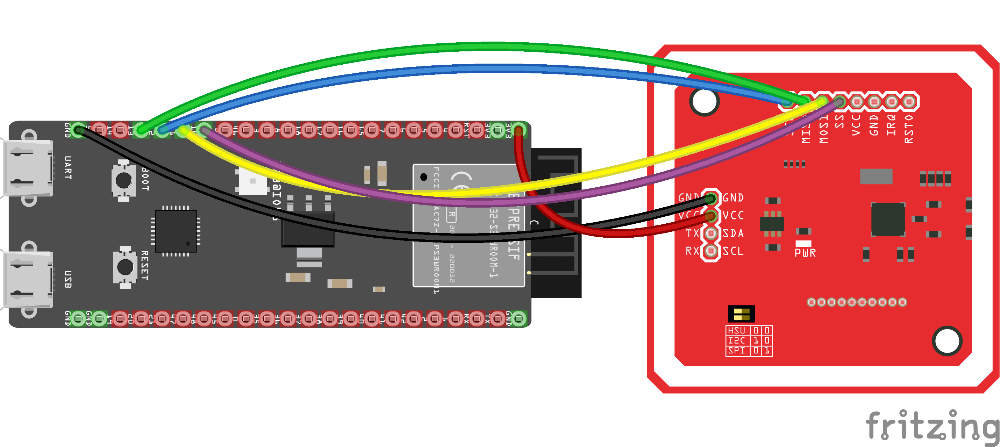
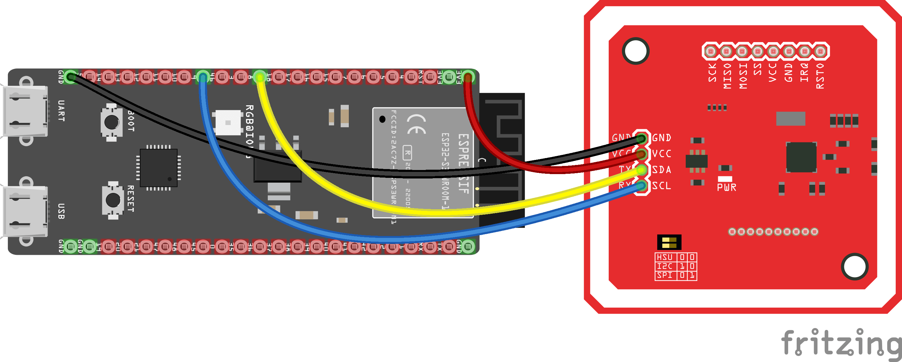

cryptnox-sdk-esp32


cryptnox-sdk-esp32 is an ESP-IDF component bundle that enables the use of Cryptnox Smart cards on ESP32-family platforms. It provides secure communication with the card, retrieves card information, and exposes basic cryptographic operations through the shared C++ core SDK.
Supported hardware
Cryptnox Hardware Wallet smart cards
Works with Cryptnox Hardware Wallet smart cards running firmware v1.6.0 or later.
| Smart card | Wallet version |
|---|---|
| Crypto Hardware Wallet – Dual Card Set | v1.6.1 |
NFC readers
| Reader | Type | Interface |
|---|---|---|
| PN532 NFC Module | Contactless (NFC/ISO 14443) | SPI or I²C |
Host board
| Board | MCU | Notes |
|---|---|---|
| ESP32-S3-DevKitC-1 | ESP32-S3-WROOM-1 | Official Espressif dev kit — wire PN532 with jumpers to the 2×22-pin headers |
Installation
- Install ESP-IDF v5.5 following the official guide.
- Clone this repository with submodules (the C++ core SDK is a submodule): git clone --recurse-submodules https://github.com/embarquech/cryptnox-sdk-esp32.git
- From the project root, set the target and build: idf.py set-target esp32s3idf.py build flash monitor
Hardware setup
- Attention
- Always double-check the wiring before powering the board to prevent damage.
Wiring shown for the ESP32-S3-DevKitC-1.
ESP32-S3 and PN532 NFC — SPI interface
| PN532 Pin | ESP32-S3 GPIO | Wire Color |
|---|---|---|
| VCC | 3.3V | Red |
| GND | GND | Black |
| SCK | IO12 | Blue |
| MISO | IO13 | Green |
| MOSI | IO11 | Yellow |
| SS (CS) | IO10 | Violet |
- Important
- Make sure the switches on the PN532 module are configured for SPI mode:
- Switch 0 → HIGH
- Switch 1 → LOW

ESP32-S3 and PN532 NFC — I²C interface
| PN532 Pin | ESP32-S3 GPIO | Wire Color |
|---|---|---|
| VCC | 3.3V | Red |
| GND | GND | Black |
| SDA | IO8 | Yellow |
| SCL | IO9 | Blue |
| IRQ | IO20 | Violet |
| RST | IO21 | Grey |
- Important
- Make sure the switches on the PN532 module are configured for I²C mode:
- Switch 0 → LOW
- Switch 1 → HIGH

Quick usage examples
All examples assume the shared SPI bus has been initialised and the three adapters (ESP32Logger, ESP32CryptoProvider, ESP32Pn532Transport) are wired into a CryptnoxWallet. Helper macros are used for brevity; see examples/UsdcSigning/ for the full ESP-IDF boilerplate.
1. Connect to a Cryptnox card
2. Verify the PIN code
The card must be initialised before calling verifyPin.
Security note: Never hard-code a PIN in firmware — read it from a secure source at runtime and wipe the buffer with CW_Utils::secure_wipe() immediately after use.
3. Sign a transaction hash
Signs a 32-byte digest (e.g. SHA-256 of a Bitcoin or Ethereum transaction) on the secp256k1 curve.
See examples/UsdcSigning/ for a full reference that wires up the SPI bus and polls the PN532.
Security
- Flash Encryption and Secure Boot V2 must be enabled for production deployments. Defaults are set in sdkconfig.defaults. eFuse programming is irreversible — practice on a development board first.
- Hard-coded secrets: Never hard-code a PIN or private key in firmware. Wipe PIN buffers with CW_Utils::secure_wipe() immediately after use.
- Dependency pinning: Use the exact ESP-IDF tag (v5.5.0) and pin the cryptnox-sdk-cpp submodule to a commit hash.
Documentation
The generated documentation for this project is available here.
License
cryptnox-sdk-esp32 is dual-licensed:
- LGPL-3.0 for open-source projects and proprietary projects that comply with LGPL requirements
- Commercial license for projects that require a proprietary license without LGPL obligations (see COMMERCIAL.md for details)
For commercial inquiries, contact: conta.nosp@m.ct@c.nosp@m.ryptn.nosp@m.ox.c.nosp@m.om